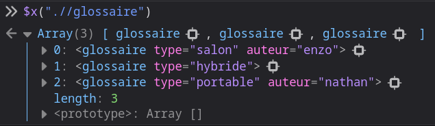
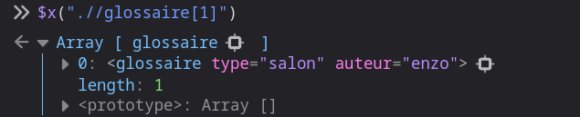
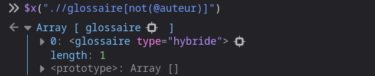
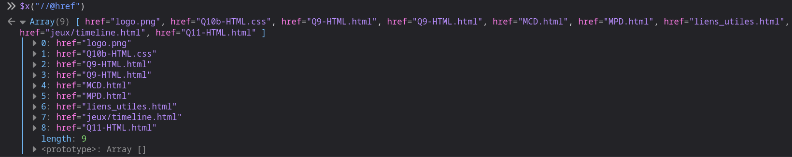
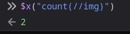

XPATH
Vous serons présentées sur cette page, les requêtes XPATH
Première requête : $x(".//glossaire")

Deuxième requête : $x(".//glossaire[1]")

Troisième requête : $x(".//glossaire[not(@auteur)]

Quatrième requête : $x("//@href)

Cinquième requête : $x("//@href)
